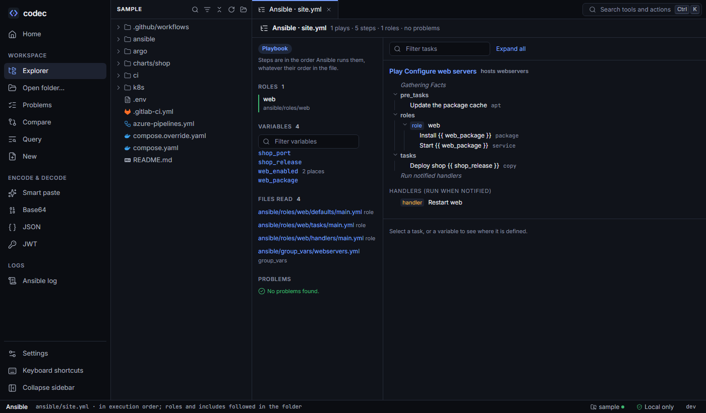

Ansible
The Ansible view lays out a playbook in the order Ansible runs it — facts, pre_tasks, roles with their dependencies, tasks, post_tasks and handler flushes — with roles and includes opened in place, and tells you where every variable is defined.

ansible/site.yml: the web role's tasks appear where Ansible runs them, and the variables list shows every definition.Execution order#
For each play, codec lists what runs, in order:
- Gathering facts (unless
gather_facts: false). pre_tasks, then handlers they notified.roles, each role'smeta/main.ymldependencies first, with the role's tasks inline.tasks, includingimport_tasks,include_tasks,import_roleandinclude_roleopened in place.post_tasks, and the handler flushes Ansible performs between sections.
Each task shows its module, when, loops, tags and the handlers it notifies; select it for its full definition and the file it lives in.
Playbook map#
Map (next to Steps) draws the playbook's shape: each play, the roles it runs (with their meta dependencies), the task files they import or include, and the handlers that tasks notify. Solid edges are import_*, decided when the playbook is read; dashed edges are include_*, decided while it runs. An include whose file name holds a variable is resolved when the variable has exactly one definition (marked assumed); with several, the node lists the candidates, highest precedence first. Roles installed at run time (Galaxy, collections) are marked external. Select a node for where it is written.
With a log loaded in the Ansible log tool, the map is coloured by a run: failed, changed, ok, rescued, or never ran. The run of this playbook is picked when the log names it (PLAYBOOK:, printed with -v). Tasks are placed by their task path: (with -vv), else by their role, else on their play.
Finding roles#
A role is looked for where Ansible would look, in this order: roles/ next to the playbook, roles_path from the nearest ansible.cfg, roles/ in folders up to the repository root, then a folder of that name. If it is only found in another repository inside the open folder, it is read from there and marked. A role that isn't found is assumed to be installed at run time (from Galaxy or a collection) and noted, naming the requirements file that lists it if there is one.
Variables and precedence#
Select a variable to see every place it is defined, highest precedence first, using Ansible's precedence list — role defaults (lowest), inventory and group_vars/host_vars, play vars and vars_files, role vars, block and task vars, set_fact, role params, extra vars (highest). The winning definition is marked.
group_vars and host_vars are collected from the repository without knowing which hosts a run will target, and codec says so. In the editor, hover any {{ variable }} for the same list, or go to its definition.
Inventories#
YAML inventories open as a tree of groups (with children) and hosts, with the variables set at each level. Hosts written without settings (web-1.example.com:) are fine — that's how Ansible documents them.
From a failed run to the task#
The Ansible log tool reads whole pipeline logs. When a folder is open, a task's Defined in link finds its definition — by the task path in the log (inside a role, the role's name must match too), otherwise by name, matching {{ }} in names against any value.
In the editor#
Outline in execution order, Jinja expressions tinted, hover and go to definition for variables and when: expressions, roles, handlers (notify → the handler or its listen topic), included files and templates. Problems: roles and included files that can't be found (with "did you mean"), and a notify that no handler of the play is named or listens to.
From the command line#
codec ansible plays ansible/site.yml
play Configure web servers · hosts webservers
(gathering facts)
pre_tasks:
Update the package cache · apt
roles:
role web
Install {{ web_package }} · package → notifies Restart web
Start {{ web_package }} · service
tasks:
Deploy shop {{ shop_release }} · copy → notifies Restart web
(run notified handlers)
codec ansible vars ansible/site.yml web_package # where it is defined, highest precedence first
web_package
role default (web) nginx ansible/roles/web/defaults/main.yml:2
codec ansible task "web : Restart web" # a task name from a log → its definition
codec ansible inventory ansible/inventory.yml